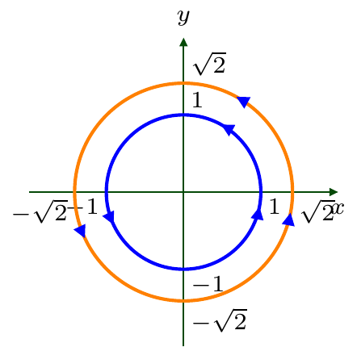

5 General ideas
5.1 Definition
We will define a two-dimensional dynamical system as a pair of (usually coupled) one-dimensional dynamical systems:
\[ \begin{cases} x'=f(x,y),\\ y'=g(x,y). \end{cases} \tag{5.1}\]
Here \(x=x(t)\in{\mathbb{R}}\), \(y=y(t)\in{\mathbb{R}}\), \(t\in I\) for some \(I\subseteq{\mathbb{R}}\), and \(f,g: {\mathbb{R}}^2\to{\mathbb{R}}\).
5.2 Basic notions
The phase space for the dynamical system (5.1) is \({\mathbb{R}}^2\); i.e. (5.1) describes the motion of a point \((x,y)=(x(t),y(t))\) on the plane \({\mathbb{R}}^2\); the motion depends on (time) \(t\in I\subseteq{\mathbb{R}}\).
For any \(t_0\in I\), a pair \(x_0=x(t_0)\in{\mathbb{R}}\), \(y_0=y(t_0)\in{\mathbb{R}}\) (or, equivalently, a point \((x(t_0),y(t_0))\in{\mathbb{R}}^2\)) is called the initial condition for (5.1).
The dynamical system (5.1) together with an initial condition \((x_0,y_0)\) is called the initial value problem.
5.3 Definition: Smooth function in \({\mathbb{R}}^2\)
We will say that functions \(f\) and \(g\) are smooth on some region \(D\subseteq{\mathbb{R}}^2\), e.g. \(D=(a,b)\times (c,d)\subseteq{\mathbb{R}}^2\), if all functions \[ f,\ g, \ {\dfrac{\partial f}{\partial x}}, \ {\dfrac{\partial f}{\partial y}}, \ {\dfrac{\partial g}{\partial x}}, \ {\dfrac{\partial g}{\partial y}} \] are continuous on \(D\).
5.4 Theorem: Existence and uniqueness
- Let \(f\) and \(g\) in (5.1) be smooth on some \(D=(a,b)\times (c,d)\subseteq{\mathbb{R}}^2\). Consider the initial value problem for (5.1) given by
\[ {x(t_0)=:x_0\in(a,b), \quad y(t_0)=:y_0\in(c,d)} \]
(or, in short, \((x_0,y_0)\in D\)). Then there exists a unique solution to the initial value problem on some time-interval \(I:=(t_0- \delta,t_0+\delta)\) for a \(\delta>0\), i.e. there exists a unique pair of functions \(x(t),y(t)\) which solve (5.1) and satisfy the initial conditions.
The functions \(x(t),y(t)\) are also smooth in \(t\in I\).
The time-interval may extended to a maximal time-interval \((T_-,T_+)\subseteq{\mathbb{R}}\).
5.5 Trajectories
5.6 Remark
Notice the difference with Definition 2.8. The time itself is not a coordinate of the trajectory for a two-dimensional dynamical system, in contrast to the one-dimensional dynamical system.
In other words, the trajectory of a one-dimensional dynamical system \(x'(t)=f(x(t))\) lies on the plane \((t,x)\), whereas the trajectory of the two-dimensional dynamical system (5.1) lies on the plane \((x,y)\).
In particular, a trajectory of (5.1) is not the graph of solutions \(x=x(t)\), \(y=y(t)\) to the dynamical system (5.1).
Consider the corresponding examples.
5.7 Example
Functions \(x(t)=\cos t\), \(y(t)=\sin t\), \(t\geq0\), solve the initial value problem
\[ \begin{cases} x'=-y, \\ y'=x. \end{cases} \qquad \begin{aligned} x(0)&=1,\\ y(0)&=0. \end{aligned} \tag{5.2}\]
Since \[ x(t)^2+y(t)^2=\cos^2 t+\sin^2 t=1, \qquad t\geq0, \] the trajectory of (5.2) is just the circle \[ \{(x,y)\in{\mathbb{R}}^2 \mid x^2+y^2=1\}, \] whereas the space-time diagram, that shows the graphs of \(x=x(t)\) and \(y=y(t)\), is different (note that the graphs may be shown also on different diagrams):
Note that the arrows on the trajectory show the direction of motion of the point \((x(t),y(t))\in{\mathbb{R}}^2\) when \(t\in[0,\infty)\) grows.
5.8 Example
Functions \(x(t)=e^{-t}\), \(y(t)=1-e^{-t}\), \(t\in{\mathbb{R}}\), solve the initial value problem
\[ \begin{cases} x'=y-1, \\ y'=x. \end{cases} \qquad \begin{aligned} x(0)&=1,\\ y(0)&=0. \end{aligned} \tag{5.3}\]
Since \(x(t)+y(t)=e^{-t}+(1-e^{-t})=1\), the trajectory of (5.3) lies on the line \(\{(x,y)\in{\mathbb{R}}^2 \mid x+y=1\}\), whereas the space-time diagram is, of course, different. Moreover, one can consider (5.3) for \(t\in[0,\infty)\), then the whole trajectory is just a segment closed from one side, as then \(0<x=e^{-t}\leq1\) and \(0\leq y=1-e^{-t}<1\).
However, if we consider (5.3) for \(t\in{\mathbb{R}}\), the trajectory becomes an infinite ray. In both cases, the point \((0,1)=\lim\limits_{t\to+\infty}(x(t),y(t))\) does not belong to the trajectory.
5.9 Remark
Below, we will be mainly working with finding/describing trajectories; the space-time diagram may be much more challenging, especially for less trivial dynamical system. On the other hand, having a trajectory, one can say something about the behaviour of the solutions. For example, if one gets a closed trajectory
then it means that each point \((x_1,y_1)\) of this trajectory is “visited” during the motion along the trajectory again and again, i.e. \((x(t),y(t))=(x_1,y_1)\) at infinitely many moments of time \(t\), thus both \(x(t)\) and \(y(t)\) are periodic-like functions. Or, if the trajectory is directed towards a point which does not belong to it:
would mean the an both \(x(t)\) and \(y(t)\) have finite limits as \(t\to\infty\) (in the latter picture, say, the limits are \(1\) and \(0\), respectively).
5.10 Theorem
Let \(f,g\) be smooth functions on \(D\subseteq{\mathbb{R}}^2\) and \(I\subseteq{\mathbb{R}}\) be a time-interval so that for each \(t_0\in I\) and \((x_0,y_0)\in D\) the initial value problem to (5.1) with \(x(t_0)=x_0\), \(y(t_0)=y_0\) has unique solutions \(x(t),y(t)\) for \(t\in I\). Then any two trajectories either coincide or do not have common points (i.e. do not cross nor touch each other).
5.11 Example
Consider again (see Example 5.7) the dynamical system (5.2). We have shown that the trajectory which passes through the point \((x_1,y_1)=(1,0)\in{\mathbb{R}}^2\) and hence which is corresponding to the initial condition \({x(0)=1,\ y(0)=0}\) is given by \({x(t)=\cos t}\) and \({y(t)=\sin t}\); and is just a unit circle centred at the origin. Consider now another initial condition: \({x(0)=1=y(0)}\). The corresponding solution to (5.2) is then \[ {x(t)=\cos t-\sin t, \qquad y=\cos t+\sin t,} \] (check by yourself!) and one has \[ x(t)^2+y(t)^2= 2\cos ^2 t +2\sin ^2 t=2, \]
hence, the trajectory is the circle of the radius \(\sqrt{2}\) centred at the origin.

5.12 Remark
The crucial is that Theorem 5.10 states that trajectories do not have common points, whereas graphs of e.g. \(x(t)\), corresponding to different initial conditions, may intersect.
5.13 Example
In Example 5.11, \(x(0)=1,y(0)=0\) lead to \(x(t)=\cos t\) whereas \(x(0)=1=y(0)\) led to \(x(t)=\cos t-\sin t\). The trajectories, that are circles of radius \(1\) and \(\sqrt{2}\) do not intersect whereas graphs of \(x=\cos t\) and \(x=\cos t-\sin t\) have (infinitely many) common points (namely, when \(t=k\pi\), \(k\in{\mathbb{Z}}\)).
5.14 Definition
A point \((x_*,y_*)\in{\mathbb{R}}^2\) such that
\[ \begin{cases} f(x_*,y_*)=0,\\ g(x_*,y_*)=0 \end{cases} \tag{5.4}\]
is said to be a fixed point of the dynamical system (5.1).
5.15 Properties of fixed points
If \((x_*,y_*)\in{\mathbb{R}}^2\) is a fixed point of (5.1), then \(x(t)\equiv x_*\) and \(y(t)\equiv y_*\) is a pair of stationary solutions to (5.1).
The corresponding trajectory hence consists of one point only: \((x_*,y_*)\).
By Theorem 5.10, any other trajectory does not path through \((x_*,y_*)\).
The corresponding graphs on the space-time diagram are straight lines.
5.16 Corollary
5.17 Direction field
Let \((x(t),y(t))\) be a solution to (5.1) for \(t\in I\subseteq{\mathbb{R}}\). Then, for each \(t\in I\), the vector \[ \bigl(x'(t),y'(t)\bigr) =\bigl(f(x(t),y(t)),g(x(t),y(t))\bigr) \] is the tangent vector to the corresponding trajectory of (5.1) at the point \((x(t),y(t))\in{\mathbb{R}}^2\) of that trajectory.
The direction field (a.k.a. vector field) of (5.1) with smooth functions \(f,g:D\to{\mathbb{R}}\) is the set of vectors with directions \((f(x,y),g(x,y))\) for all \((x,y)\in D\).
5.18 Example
Consider again the dynamical system from Example 5.7, i.e. with \(f(x,y)=-y\), \(g(x,y)=x\). The corresponding direction gives a hint how the trajectories may look like:
5.19 Example
Usually, the recovering of trajectories from the direction field is less trivial. Consider, for example, the dynamical system (5.1) with \(f(x,y)=-2 x - x^2 + x y\), \(g(x,y)=4 y + 3 x y - y^2\). Then
5.20 Phase portrait
Our aim will be to get the phase portrait of the dynamical system (5.1) for certain smooth \(f\) and \(g\), that is the sketch of “typical” trajectories around each of the fixed point of the dynamical system.
What does “typical” mean we will discuss for each particular type of problems considered below.